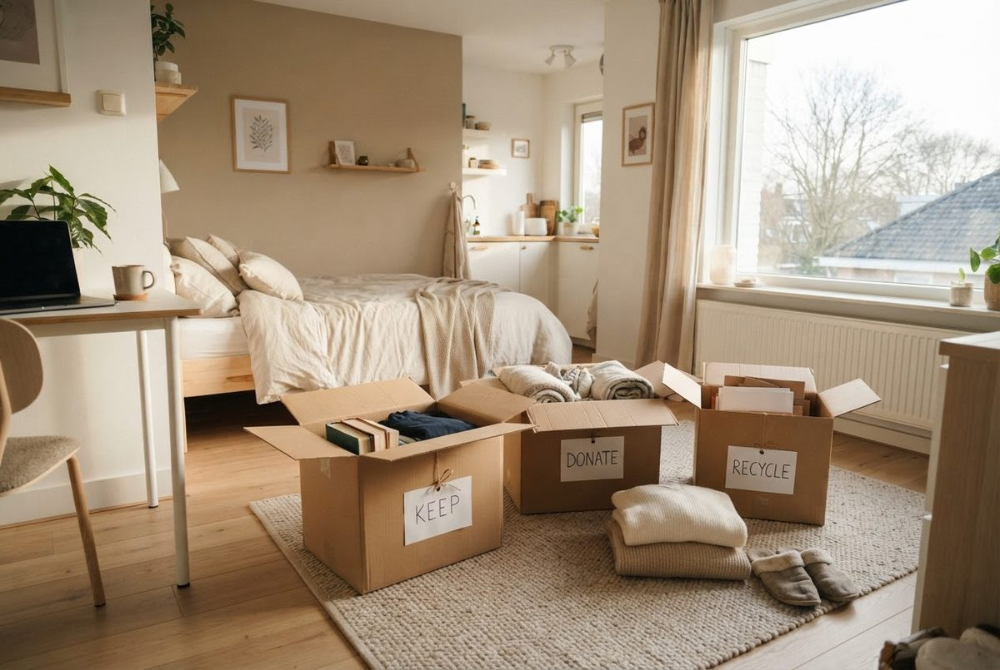
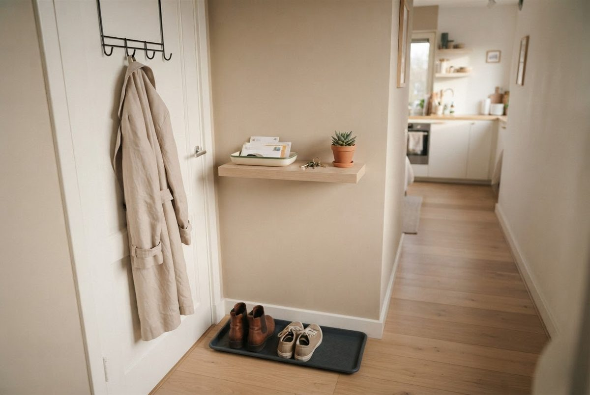
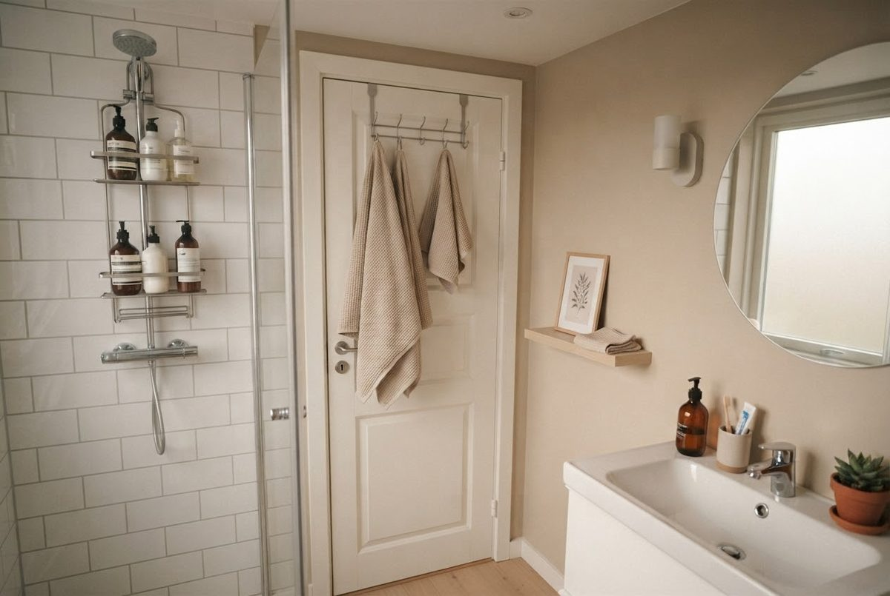
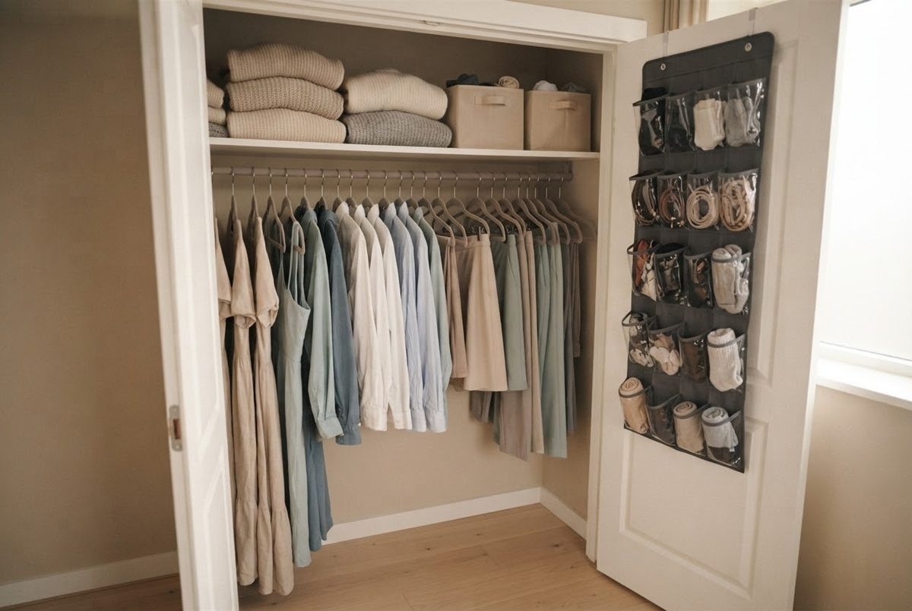
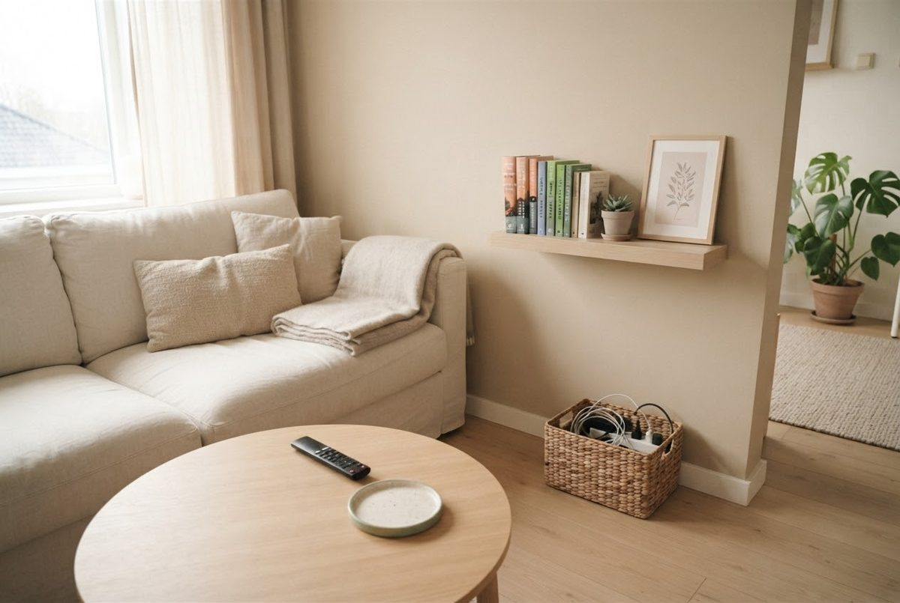
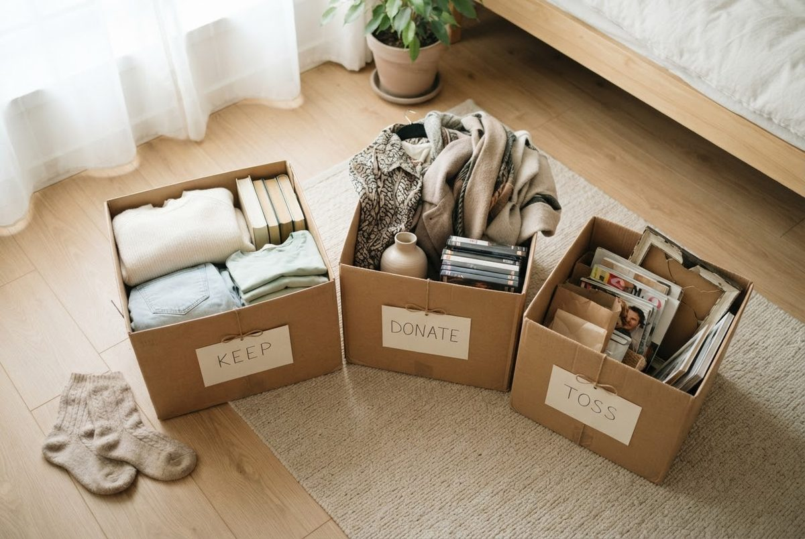

Declutter Checklist
New Year declutter checklist for small apartments.
By the second week of January, most small apartments look the same. The holiday boxes are still by the door, the new gifts have no home, and the closet door won’t quite close.

You want a fresh start, but you don’t want to spend $200 on bins or put a single hole in a wall your landlord will inspect. Good news: you can reset the whole place with what you already own and a few weekends. (Still have the holiday decor out? Our Christmas decoration storage guide shows where it can go once the season is over.)
The checklist at a glance
- Entryway (about 20 minutes)
- Kitchen (about 90 minutes)
- Bathroom (about 30 minutes)
- Bedroom (about 45 minutes)
- Closet (about 90 minutes)
- Living area (about 60 minutes)
How to use this checklist
Plan on about six to eight hours total, split across three or four sessions.
Don’t try to do it all in one day. Decision fatigue is real, and by hour four you’ll start keeping things just to make it stop.
What you need
You need very little: three large bags or boxes (label them Donate, Toss, and Relocate), a trash bag, a marker, a damp cloth, and a timer on your phone. The Relocate box is for things that belong in another room, which is the most underrated category in small-space decluttering. Half of your “clutter” is just stuff living in the wrong place.
The order to work in
Work in the order below. Entryway first, because it’s small and gives you a quick win. Closet comes after the bedroom because you’ll need the bedroom space to sort clothes.
One rule for every section: take everything out of the space before you put anything back. Sorting items while they’re still tucked in drawers is how you end up keeping all of them.
The room-by-room checklist
Every item is a specific action. Tick them off as you go.
Entryway
About 20 minutesMost entryways in small apartments are just a strip of floor and a few hooks. That means every item here competes for very little space.

- Pull every shoe off the floor and rack. Keep the pairs you’ve worn in the last month plus one pair for each season. Everything else goes to the closet, donate bag, or trash.
- Empty your coat hooks. Keep one coat per hook, maximum. Extra coats go in the closet or get donated.
- Throw out or recycle every piece of mail you’ve been “meaning to deal with.” Keep only what needs action, and put it in one spot, like a single shallow tray.
- Check the bag pile. If you own more than two tote bags you actually use, donate the rest. Reusable grocery bags multiply like rabbits.
- Wipe down the floor and the wall behind where the shoes lived.
A quick opinion: skip the fancy entryway benches with built-in storage. In a narrow entry they eat the walking space you need. A slim over-door hook rack and a boot tray (about 28 inches wide) do more for less. For a fuller setup, see our small entryway organization guide.
Kitchen
About 90 minutesKitchens are where small apartments go wrong fastest, because the stuff is heavy, bulky, and feels useful. Take it in three passes: counters, cabinets, then fridge and pantry.
- Clear every counter completely. Put back only what you use daily. For most people that’s a coffee maker, a dish rack, and maybe a toaster. Everything else needs a cabinet home or the exit.
- Pull out all your mugs and glasses. Keep four to six of each if you live alone, eight if you live with a partner. Duplicates and promotional mugs go in the donate bag.
- Gather every food container and match each with a lid. Any container without a lid goes in recycling, and any lid without a container goes in the trash. This usually clears out a full shelf.
- Go through your small appliances. If you haven’t used the air fryer, blender, or waffle maker in 12 months, it’s a donate candidate. Be honest here, because these things take a lot of cabinet space.
- Check every spice jar for a date or a smell test. If it has no smell, it has no flavor. Toss it.
- Empty the freezer door and fridge shelves. Throw out anything expired, then wipe each shelf with the damp cloth.
- Clear the space under the sink. Toss dried-up sponges, half-empty cleaning bottles you don’t use, and plastic bags older than your last move.
If your cabinets are tight, a basic wire shelf riser (usually $10 to $15) doubles your usable shelf height for plates and bowls. It’s one of the few kitchen organizers that’s actually worth buying. A tension rod under the sink is also useful for hanging spray bottles, as long as your cabinet is under about 36 inches wide and doesn’t have a pipe in the way. More ideas in our small kitchen appliance storage guide and pantry organization guide.
Bathroom
About 30 minutesBathrooms are small, so the clutter is usually products, not furniture. This is the fastest room to finish.

- Empty every drawer, shelf, and the shower caddy onto the counter.
- Toss anything expired, separated, dried out, or that you tried once and disliked. Old sunscreen and mascara go first.
- Group what’s left by use: daily, weekly, rarely. Only the daily group should live within arm’s reach.
- Keep no more than two backup bottles of anything. A stockpile of six shampoos is not a deal, it’s a storage problem.
- Check your towels. Two per person plus one spare set is plenty. Worn-out towels can go to an animal shelter, which usually takes them.
- Wipe the shelves and inside of the medicine cabinet before putting things back.
A caution: over-the-toilet shelves look neat in photos, but many are wobbly and take up more visual space than they save. If you have a tiny bathroom, a slim over-door hook for towels and a shower caddy that hangs from the showerhead will do the job without taking up floor. Our tiny bathroom decluttering guide goes further.
Bedroom
About 45 minutesYour bedroom should feel like a place to rest, not a second storage unit. In a studio, that matters even more because the bed sits in the same space you live in.
- Look under the bed. If you can see a dust bunny the size of a cat, pull everything out. Under-bed storage is great, but only for things you use seasonally, like extra bedding or off-season shoes. (See how to use the space under your bed.)
- Clear your nightstand to the basics: a lamp, a phone charger, and one book. Everything else gets a home or leaves.
- Strip the bed and check your sheets. Keep two sets per bed. Three sets is already too many for most small apartments.
- Gather every cup, plate, and water glass that migrated to the bedroom. They go back to the kitchen right now.
- Check your pillows. Keep what you use. Throw out any that have gone flat, yellow, or lumpy.
- If you have a dresser top, clear it. A tray for jewelry and keys is fine. A pile of mystery items is not.
Closet
About 90 minutesThis is the big one. Do it when you have energy, not at 10 p.m.

- Take every item of clothing out and lay it on the bed. Yes, all of it. Seeing the full pile is the point.
- Pick up each piece and ask the questions in the Keep, Donate, Toss section below. Don’t skip ahead. Don’t “come back to it later.”
- Sort what you’re keeping by category: tops, bottoms, dresses, outerwear. Put like things together.
- Swap out all your mismatched hangers for one type. Slim velvet hangers (about $20 for 50) save roughly a third of the rod space compared to thick plastic ones.
- Move off-season clothes to a flat under-bed bin or the top shelf. Fold bulky sweaters instead of hanging them, because hanging stretches the shoulders.
- Check the floor. Anything on it that isn’t shoes or a bag goes elsewhere.
- Add an over-door organizer on the inside of the door for scarves, belts, or small bags. It’s a renter-friendly way to get extra storage with zero tools.
One honest limit: if you have a very deep closet, say more than 30 inches, a tension rod or a second rod won’t solve much because the back stays unreachable. In that case, use clear bins at the back for things you rarely need and keep daily clothes in front. For more closet fixes, see our small closet guide and hanging closet organizer guide.
Living area
About 60 minutesThe living area is where all the leftover decisions pile up. Do this room last so you know what’s leftover from the others.

- Clear the coffee table completely and put back only what you use every day, like a remote and a coaster. Papers, chargers, and random mugs go elsewhere.
- Go through your bookshelf. Donate anything you’ve read and won’t read again. Keep favorites and books you’ll actually reference.
- Gather every cable, charger, and remote. Test each one. If it doesn’t have a device you still own, toss it. Wrap the rest with a reusable cable tie and group them in one small box.
- Check every blanket and throw pillow. Keep two blankets and two to four pillows. More than that just gets moved around.
- Look at your decor. Remove anything that’s only there because it was a gift or you “should” display it. Fewer, bigger items look better in a small space than lots of small ones.
- Take out your recycling and any boxes you’ve been saving. Flatten them or let them go.
If wall space is limited and you can’t drill, use adhesive strips rated for the weight you’re hanging. Check the label on the pack, because the weight limit is printed there. Skip the cheap no-name versions, since a falling frame is worse than an empty wall. Our guide to adhesive hooks done right covers weight limits and wall prep.
Keep, donate, toss: the rules of thumb
Most decluttering advice gets vague at this point, so here are tests you can actually use.

Keep it if:
- You’ve used it in the last 12 months and can name the next time you’ll use it.
- It fits your body or your life right now, not the version you’re hoping for.
- It’s something you’d buy again today at the full price.
Donate it if:
- It’s in good condition but you haven’t used it in a year.
- You own a duplicate and the second one doesn’t do something the first can’t.
- It was a gift you’ve never liked, and you feel guilty, not happy, when you see it.
Toss it if:
- It’s broken and you haven’t fixed it in six months. You’re not going to.
- It’s stained, torn, expired, or missing a part you can’t replace.
- It’s a charger or cable for a device you no longer own.
Sentimental items are the exception. Put them in one small box, about the size of a shoebox, and set that as your limit. If it doesn’t fit, you pick the best ones. Do those last, once you’re warmed up.
Common mistakes in small spaces
Five habits that undo a good declutter.
-
Buying storage before you declutter
It feels productive, but you end up with nice bins full of stuff you didn’t need. Declutter first, then measure the space you have left, then buy only what’s missing. When you do buy, our guide to storage bins for small apartments helps you pick the right size.
-
Moving clutter instead of removing it
If your donate bag stays by the door for three weeks, you haven’t decluttered, you’ve relocated. Put it in your car or drop it off within 48 hours.
-
Working on too many areas at once
Pulling out the whole closet, the kitchen, and the bathroom on the same day leaves you with piles in every room and no place to walk. One zone at a time, finish before you start the next.
-
Keeping things “just in case”
A fair test: could you borrow it, rent it, or buy it again for under $20 within a day? If yes, let it go.
-
Organizing things you shouldn’t own
A perfectly labeled drawer of dead batteries and takeout menus is still a drawer of junk.
FAQ
Quick answers to the questions that come up most.
How long will this take in a studio or one-bedroom?
Expect six to eight hours total. Studios usually land near the lower end because there’s less space, but the closet and kitchen take longer than people expect.
What if I don’t have a car to donate things?
Many charities, like Goodwill and Savers, take drop-offs, and some local groups offer free pickup. Buy Nothing groups also work well for items you want to pass on directly to neighbors.
Should I sell stuff instead of donating?
Only if it’s worth more than about $30 and you’ll list it this week. Otherwise it sits in a corner for months. For small items, donating saves you time you’d rather spend on something else.
How do I handle a partner or roommate who keeps everything?
Do your own things first and leave theirs alone. Then offer a shared “maybe” box with a date on it. If they haven’t touched anything in it in 60 days, it goes.
What if I just don’t have enough storage even after decluttering?
Then add vertical storage that doesn’t need tools: over-door hooks, tension rods, and risers. Skip anything that needs drilling, and check your lease before using adhesives on painted walls. Our small apartment storage guide has a room-by-room plan.
Start here today
Grab one bag, walk to your entryway, and take every shoe off the floor.